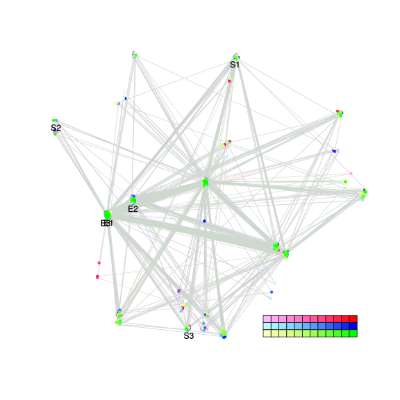
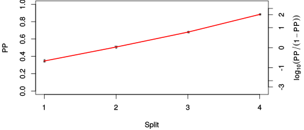
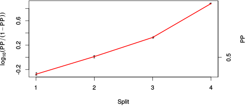

| chain # | burnin | subsample | Iterations (remaining) | command line | subdirectory | directory |
|---|---|---|---|---|---|---|
| 1 | 10000 | 1 | 90000 | bali-phy E7_AA_red3_v2_BetaGamma.fas -s 536234 -n BetaGamma_c1 | BetaGamma_c1-1 | /home/willemse/data/trees/BAli-Phy/red3_v2/E7 |
| 2 | 10000 | 1 | 90000 | bali-phy E7_AA_red3_v2_BetaGamma.fas -s 46134 -n BetaGamma_c2 | BetaGamma_c2-1 | /home/willemse/data/trees/BAli-Phy/red3_v2/E7 |
| 3 | 10000 | 1 | 90000 | bali-phy E7_AA_red3_v2_BetaGamma.fas -s 90183 -n BetaGamma_c3 | BetaGamma_c3-1 | /home/willemse/data/trees/BAli-Phy/red3_v2/E7 |
| P(data|M) = -1255.322 +- 0.152 | Complete sample: 97 topologies | 95% Bayesian credible interval: 24 topologies |
Phylogeny Distribution

| Partition support: Summary |
| Partition support graph: SVG |
{kind=link}
| 50% consensus | Newick (+PP) | SVG | |||||
| 66% consensus | Newick (+PP) | SVG | |||||
| 80% consensus | Newick (+PP) | SVG | |||||
| 90% consensus | Newick (+PP) | SVG | |||||
| 95% consensus | Newick (+PP) | SVG | |||||
| 99% consensus | Newick (+PP) | SVG | |||||
| 100% consensus | Newick (+PP) | SVG | |||||
| MAP | Newick (+PP) | SVG | |||||
| greedy | Newick (+PP) | SVG |
{kind=link}
{kind=link}
{kind=link}
{kind=link}
{kind=link}
{kind=link}
{kind=link}
{kind=link}
Alignment Distribution
Partition 1
| Diff | Min. %identity | # Sites | Constant | Informative | ||||
|---|---|---|---|---|---|---|---|---|
| Initial | FASTA | HTML | Diff | 4.17% | 109 | 2 (1.83%) | 27 (24.8%) | |
| Best (WPD) | FASTA | HTML | AU | 25.9% | 133 | 12 (9.02%) | 33 (24.8%) |
Mixing
{kind=link}
{kind=link}
| burnin (scalar) | ESS (scalar) | ESS (partition) | ASDSF | MSDSF | PSRF-CI80% | PSRF-RCF |
|---|---|---|---|---|---|---|
| 680 | 7424 | 5782.159 | 0.005 | 0.010 | 1.001 | 1.008 |
Projection of RF distances for the first 3 chains3D | Variation of split PPs across chains |
Scalar variables
| Statistic | Median | 95% BCI | ACT | ESS | burnin | PSRF-CI80% | PSRF-RCF |
|---|---|---|---|---|---|---|---|
| prior | -155.8 | (-184, -130.2) | 27.96 | 9656 | 677 | 1 | 0.9981 |
| prior_A1 | -136.4 | (-161.6, -111.8) | 16.04 | 16835 | 373 | 0.9996 | 1.003 |
| likelihood | -1239 | (-1256, -1224) | 17.19 | 15706 | 187 | 0.9999 | 1 |
| logp | -1395 | (-1419, -1374) | 27.83 | 9700 | 283 | 1 | 0.9998 |
| Heat.beta | 1 | ||||||
| Scale1 | 2.832 | (1.138, 5.622) | 1.026 | 263241 | 140 | 1 | 0.9983 |
| S1.F.pi.A | 0.05626 | (0.03503, 0.0801) | 7.764 | 34775 | 505 | 0.9997 | 0.9974 |
| S1.F.pi.R | 0.07383 | (0.04674, 0.1047) | 7.953 | 33947 | 289 | 1 | 0.9967 |
| S1.F.pi.N | 0.02587 | (0.0121, 0.04314) | 8.385 | 32201 | 232 | 1 | 0.9985 |
| S1.F.pi.D | 0.04468 | (0.0252, 0.06665) | 8.248 | 32735 | 259 | 0.9996 | 0.9963 |
| S1.F.pi.C | 0.04057 | (0.01911, 0.06583) | 8.336 | 32388 | 251 | 1 | 1.001 |
| S1.F.pi.Q | 0.04762 | (0.02969, 0.06819) | 7.743 | 34869 | 447 | 1 | 0.9942 |
| S1.F.pi.E | 0.09781 | (0.06807, 0.1302) | 8.173 | 33034 | 341 | 0.9999 | 1 |
| S1.F.pi.G | 0.09271 | (0.05962, 0.1285) | 8.482 | 31832 | 351 | 1.001 | 0.999 |
| S1.F.pi.H | 0.0282 | (0.01356, 0.04649) | 7.868 | 34318 | 272 | 1 | 1.002 |
| S1.F.pi.I | 0.04452 | (0.02592, 0.06676) | 8.567 | 31515 | 258 | 0.9998 | 0.9967 |
| S1.F.pi.L | 0.1011 | (0.06941, 0.1359) | 8.078 | 33422 | 202 | 1 | 1.008 |
| S1.F.pi.K | 0.03121 | (0.01657, 0.04869) | 7.729 | 34932 | 291 | 0.9996 | 0.9924 |
| S1.F.pi.M | 0.007355 | (0.001438, 0.01597) | 8.979 | 30070 | 680 | 0.9998 | 0.9994 |
| S1.F.pi.F | 0.03686 | (0.01827, 0.05854) | 8.196 | 32942 | 483 | 1 | 0.9974 |
| S1.F.pi.P | 0.04132 | (0.02136, 0.06567) | 8.348 | 32343 | 443 | 1 | 0.9962 |
| S1.F.pi.S | 0.06776 | (0.04429, 0.09394) | 7.806 | 34588 | 258 | 1 | 1.001 |
| S1.F.pi.T | 0.05037 | (0.02977, 0.07348) | 7.886 | 34236 | 283 | 0.9995 | 1.007 |
| S1.F.pi.W | 0.002387 | (5.039e-08, 0.0104) | 13.55 | 19930 | 541 | 0.9997 | 0.9994 |
| S1.F.pi.Y | 0.03488 | (0.01613, 0.05774) | 8.922 | 30261 | 588 | 1 | 1.001 |
| S1.F.pi.V | 0.05796 | (0.03609, 0.08159) | 8.826 | 30593 | 341 | 0.9998 | 0.9983 |
| I1.RS07.meanIndelLengthMinus1 | 2.018 | (0.9553, 3.5) | 3.545 | 76165 | 109 | 0.9999 | 0.9994 |
| I1.RS07.logLambda | -3.559 | (-4.126, -2.998) | 6.557 | 41178 | 170 | 1.001 | 1.002 |
| |A1| | 130 | (124, 137) | 36.37 | 7424 | 485 | 0.9 | 1.001 |
| #indels1 | 19 | (14, 23) | 18.23 | 14810 | 280 | 0.8333 | 1.002 |
| |indels1| | 56 | (46, 69) | 17.15 | 15739 | 419 | 0.9375 | 1.005 |
| #substs1 | 205 | (197, 213) | 29.46 | 9166 | 237 | 0.9091 | 1.001 |
| Scale1*|T| | 3.291 | (2.775, 3.857) | 3.154 | 85615 | 197 | 1 | 1 |
| |A| | 130 | (124, 137) | 36.37 | 7424 | 485 | 0.9 | 1.001 |
| #indels | 19 | (14, 23) | 18.23 | 14810 | 280 | 0.8333 | 1.002 |
| |indels| | 56 | (46, 69) | 17.15 | 15739 | 419 | 0.9375 | 1.005 |
| #substs | 205 | (197, 213) | 29.46 | 9166 | 237 | 0.9091 | 1.001 |
| |T| | 1.163 | (0.4447, 2.174) | 1 | 270003 | 229 | 1 | 0.9979 |